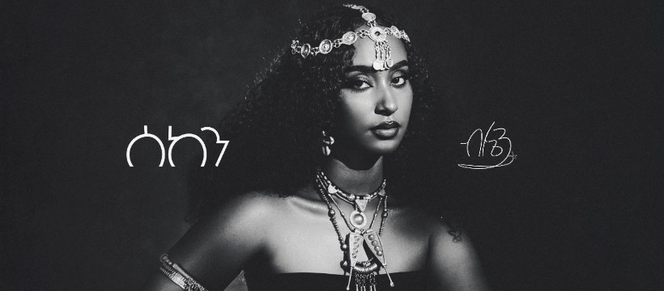
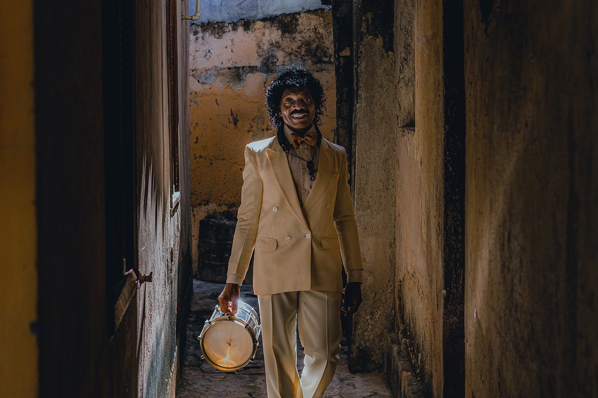
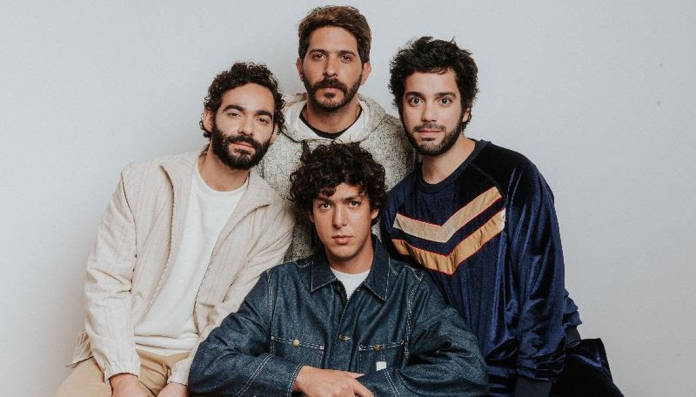

World Music Monthly, October 2026: Blén, Índio da Cuíca, Rawayana and Ayra Starr
A new voice from Ethiopia's independent scene, a 75-year-old cuíca master from Rio, a Venezuelan band up for Latin GRAMMY Album of the Year, and Nigeria's Ayra Starr on her third album. Four artists to know this month.
Welcome to the first edition of World Music Monthly, our new guide to the artists moving music forward far beyond the usual charts. Each month we pick four names: one from Ethiopia, one from Brazil, one from elsewhere in Latin America and one from the Afrobeats world. This month's lineup runs from a debut EP to a Latin GRAMMY race.
Ethiopia: Blén

Blén is an Ethiopian singer-songwriter who is building her career and an infrastructure for others at the same time. After finishing a degree in computer engineering in 2020, she co-founded Bana Records, an Ethiopia-based label set up to support Ethiopian-rooted music with a global outlook. She started writing poetry and lyrics at around age 12 and first wrote mostly in English before turning back toward her own cultural roots, with family ties to southern Ethiopia.
Her sound sits between contemporary production and Ethiopian songwriting tradition. The title track of her debut EP leans modern, while the single "Tèkètèlègn," a love song with lyrics by Esubalew Yetayew, leans into older cultural elements; Blén also creatively directed its video. The Sèkèn EP, whose title translates as "serene," rolled out single by single from October 2025 and was completed this summer, when its final tracks arrived on June 26, 2026. Its themes include resilience, womanhood, love and self-discovery, and the track "Efuyé" draws on her experience as a woman running a business in a male-dominated industry.
Start with: "Sèkèn"
Brazil: Índio da Cuíca

Francisco Tavares Machado, known as Índio da Cuíca, was born in 1951 in Morro do Borel, in Rio de Janeiro's Tijuca district, and grew up in the city's samba schools. He is a master of the cuíca, the friction drum whose squeaking, almost vocal cry is one of samba's signature sounds, and he plays it as a showman, calling himself a drummer, dancer and juggler in one. Over more than five decades he has toured from Switzerland to Tunisia and recorded with Alcione, Jair Rodrigues and Roberto Carlos.
His solo career came late. His debut, Malandro 5 Estrelas, arrived in 2021, and his follow-up, ZING ZING, came out in early September 2026 on the label QTV. Built around his raw voice and cuíca recordings, it is described by Brazilian press as "samba dub," framed by mandolin, piano, synthesizers and ritual percussion, with guitarist Gabriel de Aquino handling arrangements. Guests include Siba on "Cangalha do Boi" and Ana Frango Elétrico on "Alguém Me Chama," and Juçara Marçal contributed a new samba, "Gracinha." The album also revisits Unidos da Tijuca's 1975 samba-enredo "Magia Africana no Brasil e Seus Mistérios."
Start with: "Cuíca Maluca"
Latin America: Rawayana

Rawayana formed in Caracas, Venezuela, in 2007 and has grown into one of Latin America's most decorated alternative bands. Their sound mixes reggae, funk, psychedelic pop and Caribbean rhythms, with nods to salsa and electronic music, a blend they once named an album after: Trippy Caribbean (2016). The current lineup is Beto Montenegro, Tony Casas, Andrés "Fofo" Story, Alejandro "Abeja" Abeijón and Orestes Gómez.
The awards have piled up quickly. They won a Latin GRAMMY for Best Pop Song with "Feriado" in 2024, a GRAMMY in 2025 for Best Latin Rock or Alternative Album with ¿Quién Trae las Cornetas?, and a 2025 Latin GRAMMY for "Veneka" with Akapellah. Their newest album, ¿Dónde es el after?, was released on January 1, 2026: 23 songs with guests including Carín León, Grupo Frontera, Elena Rose and Manuel Turizo. On September 16, it earned a nomination for Album of the Year at the 27th Latin GRAMMY Awards, which take place November 12 in Las Vegas. The band has spent 2026 on the road, including arena dates in Madrid and Barcelona and a Movistar Arena show in Madrid on September 28.
Start with: "La Noche Que No Había Uber"
Afrobeats: Ayra Starr
Born Oyinkansola Sarah Aderibigbe in Cotonou, Benin, in 2002, and raised between Cotonou and Lagos, Ayra Starr has become one of the defining voices of the new Afrobeats generation. Signed to Mavin Records, she broke through with her 2021 debut EP and the album 19 & Dangerous, then went global with "Rush," which earned her a GRAMMY nomination for Best African Music Performance. Her second album, The Year I Turned 21, followed in 2024.
Her third album, Starr Girl, arrived on August 14, 2026, after being pushed back from July. It was preceded by "Where Do We Go," which debuted at No. 4 on Billboard's U.S. Afrobeats Songs chart, and "Tornado" featuring Fola, which reached No. 5 on the UK Afrobeats Singles chart. Wizkid appears on "Gimme Dat." The rollout also took her to an NPR Tiny Desk Concert and a Boiler Room London set in June, and in March she won Best International Act at the MOBO Awards for the second year in a row. Since mid-2025 she has also had international management with Roc Nation while continuing to release music through Mavin.
Start with: "Where Do We Go"
Quick Facts
- Blén (Ethiopia): Ethiopian pop / singer-songwriter · Start with "Sèkèn"
- Índio da Cuíca (Brazil): samba · Start with "Cuíca Maluca"
- Rawayana (Venezuela): Latin alternative / reggae / funk · Start with "La Noche Que No Había Uber"
- Ayra Starr (Nigeria): Afrobeats · Start with "Where Do We Go"
Four countries, four very different stages of a career: a debut, a late-blooming veteran, a band at its awards peak and a star on her third album. Know an artist who belongs in next month's issue? Send it in to paoloskid@gmail.com.